Aktuelle Infos
04.04.2026
Der Neustart meiner Webseite, die aktuell von einem befreundeten IT-Spezialisten mittels "Publii" in eine zukunftsfähige Form gebracht wird, steht die Tage an. Ich bin mega gespannt.
28.03.2026
Ich bleibe mal noch bei den norwegischen Wikingerschiffsfunden. Über diesen Link kann man einen digitalen Rundgang durch den 4. Museumsflügel des alten Wikingerschiffmuseums auf der Museumsinsel Bygdøy in Oslo machen. Dort sind die Einzelfunde - Schlitten, Wagen, Tierkopfpfosten, Textilienreste usw. - mit ihren unvergleichlich schönen Holzschnitzarbeiten jahrzehntelang ausgestellt gewesen. Deren Überführung in den angesetzten Neubau ist in vollem Gange. Die digitale Steuerung durch den Museumsflügel ist selbsterklärend wie ich finde - ganz allein im Museum - egal zu welcher Tages- oder Nachtzeit - toll!
26.03.2026
Nunmehr wurden die drei weltweit einzigartigen Schlitten des Osebergfundes - unfassbar fantastische Schnitzereien aus der Wikingerzeit - an ihren neuen Platz überführt. Dazu verlinke ich hier einige Webseiten / Videos in englischer / norwegischer Sprache, aber ihr werdet sehen: Die Bilder sprechen ihre eigene Sprache!
The Unique Sledges from Oseberg - 23.03.2026
We Are Now Relocating Our Most Fragile Objects - 23.03.2026
Why the Sledges Are Almost Impossible to Move - 24.03.2026 - darin dieser Video mit dem Titel "Derfor er Osebergsledene egentlig umulig å flytte" über 7:04 Minuten in norwegischer Sprache mit englischen Untertiteln - außerdem der Video "Flytting av Osebergskipet: Bak kulissene" mit einer Länge von (8.07 Minuten) und ebenfalls englischen Untertiteln.
Youtube Videokanal des Vikingetidmuseet mit mehreren Videos zur Thematik.
19.03.2026
Magdeburg: Gebeine von Otto dem Großen (*23.11.912 - 07.05.973) liegen laut DNA-Analysen tatsächlich im Dom
Wissenschaftliche Untersuchungen haben bestätigt, dass die im Magdeburger Dom beigesetzten Gebeine sehr wahrscheinlich von Otto dem Großen stammen. Das Grab wird gerade restauriert, weshalb man die Gebeine entnehmen und ausführlich analysieren konnte. Sachsen-Anhalts Landesarchäologe Harald Meller sprach von "bahnbrechenden" Erkenntnissen auch zur Abstammung des Kaisers.
Medienbericht vom 18.03.2026 vom MDR mit einem erläuternden Video (2.34 Minuten)
14.03.2026
Das Wikingermuseum Haithabu lädt aktuell zum Frühlingsmarkt über Ostern vom 03. bis 06.04.2026 von 09.00 bis 17.00 Uhr ein. Rund 200 Händler und Handwerker kehren zurück nach Haithabu. Während des langen und dunklen Winters haben sie in ihrer Heimat an ihren Waren und Künsten gearbeitet - und sich dann auf den weiten Weg zu dem bedeutenden Handelszentrum am Noor gemacht. Dort treffen sie auf die Bewohner der Siedlung, um gemeinsam zu handeln, zu tauschen, zu lachen und zu leben.
Zur Thematik "Tiere in der skandinavischen Wikingerzeit und in Haithabu" könnt ihr auf der der verlinkten Webseite des Wikingermuseum Haithabu einiges nachlesen.
Rückkehr von Werft: Erik Styrimathr wieder in Haithabu - Das Segelboot Erik Styrimathr ist nach nicht einmal drei Monaten in der Werft des weltbekannten Vikingeskipsmuseet Roskilde generalüberholt und mit einigen neuen Planken wieder in Haithabu angekommen - und bereit für die kommende Saison! Wind und Wetter hatten dem Boot in den letzten zehn Jahren stark zugesetzt, auch die Belastungen bei längeren Fahrten.
In der Museumswerft in Roskilde sind in den letzten Jahrzehnten über ein Dutzend detailgetreue Repliken wikingerzeitlicher Schiffe nach originalen Arbeitstechniken und in ständigem Austausch mit den Archäologen gebaut worden, so dass die Werft über die weltweit vermutlich größten Erfahrungen und Kenntnisse zum wikingerzeitlichen Schiffsbau verfügt.
04.03.2026
Ich bekam die Tage das "OK" von meinem IT'ler für Veränderungen an der Infoseite.
Von daher möchte ich heute über den nunmehr geglückten Umzug aller drei Wikingerschiffe in Oslo berichten. Über deren Webseite "Museum der Wikingerzeit" kann man die Infos zum Umzug des Tune Schiffs nachlesen und auch einen Zeitraffer Video (28 Sekunden) anschauen.
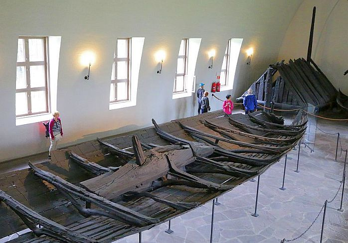
Eigenes Foto - 05.08.2015 - Tune Schiff Das Tune Schiff wurde mit einer Geschwindigkeit von 24 Zentimeter pro Minute über eine Strecke von 130 m in dem eigens angefertigten Stahlkorsett zwischen dem 23. und dem 25. Februar 2026 an seinen neuen Standort transportiert. Dazu musste es auch noch um ein Stockwerk abgesenkt werden. Eine beeindruckende Ingenieursleistung. Die Umzüge sind ein zentraler Bestandteil des großen Bauprojekts auf der Museumsinsel Bygdøy. Über diesen Video (34 Sekunden) kann man sich einen Überblick zu den drei Umzüge machen.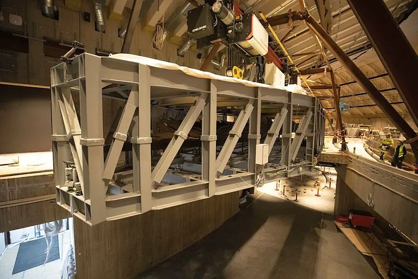
Bildquelle: Vikingtidsmuseet / Universitetet i Oslo / Lizenz: CC BY-NC-SA 4.0Das derzeitige Museum erfüllt nicht die Anforderungen an die Lagerung dieser alten Schiffe und anderer Artefakte aus der Wikingerzeit. Der Umzug der Schiffe in ein neues, klimatisiertes Gebäude mit neuen Trägersystemen ist entscheidend, um die Wikingerschätze für zukünftige Generationen zu sichern. Irgendwann in 2027 soll es seine Tore öffnen - ich stehe bereits in den Startlöchern - das wird ein absolutes Highlight!
03.01.2026
Ich habe zuletzt keine Einträge / Veränderungen mehr vorgenommen, da meine Webseite aktuell von einem befreundeten IT-Spezialisten mittels "Publii" in eine zukunftsfähige Form gebracht wird. Er meinte zu mir, wenn wir da nichts tun, stirbst dein Lebenswerk über kurz oder lang! Ab März sollte es hoffentlich so weit sein. Ich bin zutiefst dankbar und extrem gespannt!
15.10.2025
Ich habe aktuell privat viel um die Ohren, weshalb hier schon eine Weile keine Neuigkeiten mehr stehen. Gerade kam mir nun aber der Gedanke mal nach dem Stand des Neu-/Erweiterungsbaus des Wikingerschiffs Museum in Oslo zu schauen, dass irgendwann in 2027 als "Museum der Wikingerzeit" - dann auch zusammengeführt mit den wikingerzeitlichen Funden des Kulturhistorisk museum in Oslo - eröffnet werden soll. Auf diesem frei nutzbaren Foto sieht man den Baufortschritt vom August 2025 (Der "Kreis" ist der neue Anbau).
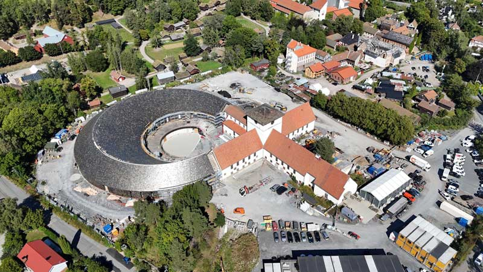
Bildquelle: Statsbygg/AF Gruppen - Lizenz: CC BY-NC-SA 4.0Auf den Webseiten (übersetzt) "Museum der Wikingerzeit" findet man diverse Videos die den Baufortschritt dokumentieren. Das Video mit dem Titel "The Oseberg Ship Has Finally Come Home!" vom 11.09.2025 zeigt in Zeitraffer den Umzug des Oseberg-Schiffes nach 99 Jahren im alten Museum an seinen neuen Standort - absolut beeindruckende Technik! So wird sich das Oseberg-Schiff dann in Zukunft präsentieren - Wow!
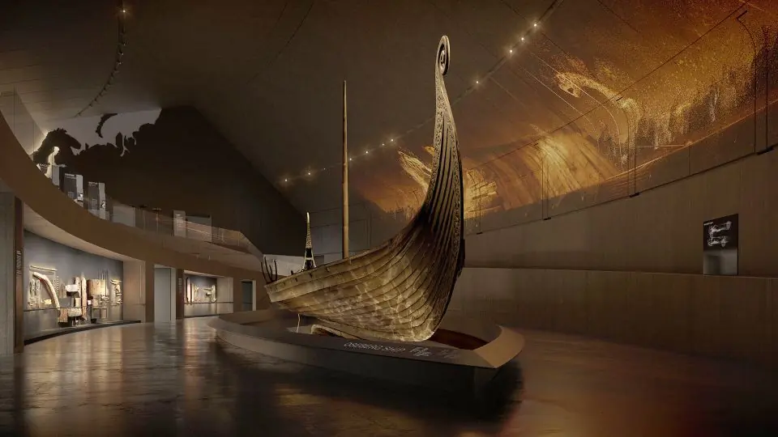
Bildquelle: Museum of the Viking Age, AART Architects and Ralph Appelbaum Associates & Tamschick Media+Space - Lizenz: CC BY-NC-SA 4.0
Die Ingenieure haben aber keine Zeit sich nach dem aufwändigen Umzug des Oseberg-Schiffes auszuruhen, denn noch in diesem Herbst sollen die beiden anderen Wikingerschiffe, nämlich das Gokstad-Schiff (29.10.2025) und das Tune-Schiff ebenfalls umziehen.
22.09.2025
Die letzten Tage bin ich weiterhin an Ergänzungen / Verbesserungen zu einigen Örtlichkeiten innerhalb von Jütland dran.
Aufgrund von umfassenden, mehrjährigen Renovierungsarbeiten hat Schloss Gottorf die Tage für längere Zeit (mindestens 3 Jahre) geschlossen. Die Moorleichen werden freundlicherweise nach Dänemark ausgeliehen und sind ab dem 08.10.2025 in Silkeborg im dortigen Museum in deren anstehender Ausstellung "Mosefolket / Die Schläfer im Moor" ausgestellt. Dort dürfen sie den berühmten Moorleichen "Tollundmann" und "Ellingfrau" Gesellschaft leisten. Der Tollundmann feiert den 75. Geburtstag seiner Entdeckung. Siehe meinen Beitrag zu den Schleswiger Moorleichen in Schloss Gottorf vom 26.07.2025.
Info des Museum für Archäologie Schloss Gottorf
12.09.2025
Heute bekam ich vom Antikvarisk -Topografisk Arkiv in Kopenhagen - Dánial Magnusson Haraldsen - Student Assistant - auf Anforderung einen handschriftlichen Bericht von Justizrat Frants Hvass (*01.10.1824 - 12.12.1890, Mitglied der Jütländischen Historisch-Topographischen Gesellschaft aus Fredriksdal bei Randers - link-LIVES - Bestattungsprotokoll)
 Bildquelle:
https://slaegtsbibliotek.dk/911086.pdf - Seite 6 /
Lizenz:
CC BY-SA 4.0
Bildquelle:
https://slaegtsbibliotek.dk/911086.pdf - Seite 6 /
Lizenz:
CC BY-SA 4.0übermittelt, den dieser am 21.07.1884 verfasst und an das damalige Nationalarchiv gesandt hatte.


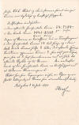
Eigentlich sollte es dazu auch eine Zeichnung geben, die im Antikvarisk -Topografisk Arkiv aber leider nicht aufzufinden war, obwohl sie in deren Zeichnungsübersicht aufgeführt ist.
Außerdem teilte mir Dánial mit, dass die Zeichnung aus dem Jahr 1804 zu dem Runenstein von Glavendrup auf Fünen, die laut Lis Jacobsen/Erik Moltke - Danmarks Runeindskrifter - 1942 - Text, von Niels Hofman Bang angefertigt worden sein soll, nicht aufzufinden ist. Der Name des Zeichners und die Zeichnung finden sich aber auch überhaupt nicht in deren Zeichnungsübersicht.
10.09.2025
Diesem Beitrag möchte ich zunächst einen Link zu einem Youtube Video (43:55 Minuten) mit dem Titel "Krieger im Schiffsgrab" voranstellen. Es geht um die beiden absolut ungewöhnlichen Schiffsgräber von Salme auf der Insel Saaremaa (zu deutsch Ösel) in Estland, die in den Jahren 2008 und 2010 ff. entdeckt und ausgeraben wurden. Meine Stieftochter Jessica, die in Rostock an der dortigen Universität das Thema Ur- und Frühgeschichte studiert ist die Tage dort auf Studienreise und hat mir heute dankenswerterweise einige Fotos von vor Ort übermittelt.

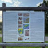

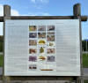

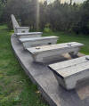

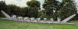

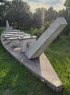

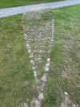

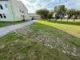
Die Fundorte der beiden Schiffsgräber wurden zu Salme 1 mit der Betonkonstruktion und zu Salme 2 mit der Bodenzeichnung visualisiert.
Zur Thematik gibt es im Internet zahlreiche frei abrufbare Abhandlungen. Hier beispielhaft "Rescue excavations of a Vendel era boat-grave in Salme, Saaremaa".
Vom 06./07.05.2022 fand eine internationale Konferenz mit dem Titel "Vikings before Vikings" seitens des Museums Saaremaa statt. Die damaligen Beiträge - immerhin 15 an der Zahl - der einzelnen Wissenschaftler sind dankenswerterwiese via Youtube abrufbar (Englischsprachig).
Am 10.11.2023 wurde dieses englischsprachige Buch mit dem Titel "The Salme Ship Burials: Two Eighth-Century Mass Graves on Saaremaa Island, Estonia, Fieldwork and Catalogue" veröffentlicht (Inhaltsverzeichnis). Das konnte mir Jessica vor Ort sehr günstig erwerben und bringt es mir mit - Danke!
08.09.2025
Die Tage habe ich die Aufzeichnungen zu Ingelheim überarbeitet, mit zahlreichen Verlinkungen versehen und einige zusätzliche Fotos eingestellt.
27.08.2025
Im Nachgang zu meinem Beitrag vom 20.09.2024 zu Seltz im Elsass war ich gestern - fast ein Jahr ist schon wieder vergangen - mit dem Rad auf Spurensuche nach den (angeblich) erhaltenen Fundamenten der Reichsabtei, die 991 von Kaiserin Adelheid (von Burgund) (*931 oder 932 in Hochburgund - 16.12.999 im Grabkloster Seltz) gegründet wurde. Sie war eine der bedeutendsten Persönlichkeiten des europäischen Mittelalters und als Gemahlin von Otto I. der Große die erste Kaiserin des Heiligen römischen Reiches deutscher Nation (Krönung 02.02.962 in Rom durch Papst Johannes XII.).
Hier die Ansicht von Seltz von Matthäus Merian (*22.09.1593 - 19.06.1650, Kuperstecher und Verleger) aus dem Jahr 1645 aus dem Werk "Topographia Palatinatus Rheni et vicinarum Regionum...".
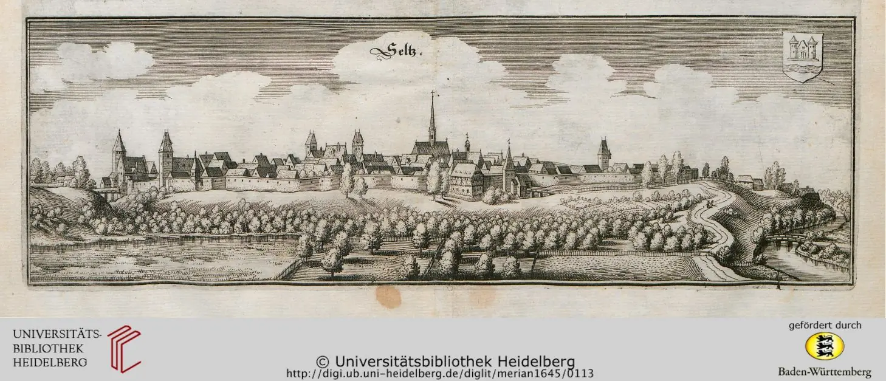
Lizenz: Public DomainAuf der Infotafel neben der heutigen Kirche in Seltz bei der Bronzestatue von Adelheid


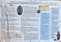
steht zu lesen:
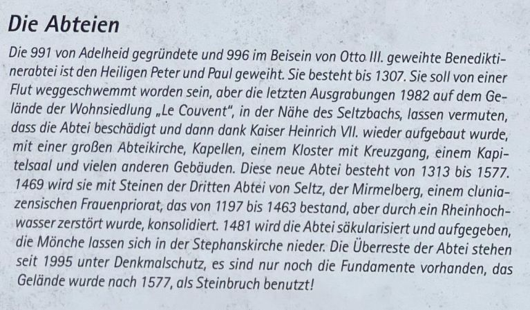
Die Wohnsiedlung "Le Couvent (Das Kloster)" liegt oberhalb der Örtlichkeit "48°53'59.0"N 8°05'53.1"E", die die ehemalige Lage des Klosters bezeichnen soll. Zwei Straßennamen nehmen Bezug dazu: Rue du Couvent (Klosterstraße) und Rue des Bénédictins (Benediktinerstraße).
Ich habe allerdings keinerlei Mauer-/Fundamentreste der ehemaligen Klosteranlage an der Örtlichkeit "48°53'59.0"N 8°05'53.1"E" gefunden.

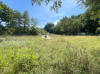
Im Keller der Touristinfo von Seltz ist ein kleines Museum untergebracht, das ich gestern erstmals besucht habe. Zahlreiche Informationen zum Leben von Adelheid von Burgund finden sich hier dankenswerterweise zweisprachig (F/D).

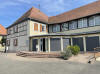

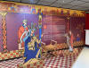


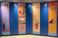


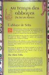
Interessant war die Tour und die darüber erlangten Erkenntnisse auf jeden Fall. Ein Besuch in dem kleinen Museum in Seltz, das auch die Zeit der Römer und Kelten in Seltz beleuchtet, lohnt sich allemal.
Bildliche Darstellung von Kaiserin Adelheid und Odilos von Cluny (?) in einem Evangeliar aus Metz, um 1000 (?). Paris, Bibliothèque nationale de France, lat. 9395, fol. 15r
Medaillonbilder mit Darstellung Adelheids, Theophanus und Ottos III. im Evangeliar von St. Gereon, ca. 990-1000. Köln, Historisches Archiv, Cod. W 312, fol. 22r - hier die das digitalisierte Werk - dort zur Seite 48 gehen
Adelheid von Burgund - Sonderführung mit dem Titel Adelheid Kaiserin, Stifterin und Heilige im Meißner Dom - Video über 5:49 Minuten
Literaturhinweise:
Die Lebensbeschreibung der Kaiserin Adelheid von Abt Odilo von Cluny - Bearb. von Herbert Paulhart - 1962
Das Original "Cod. 622, Wien, Österreichische Nationalbibliothek" - dort zur Seite 12 (fol. 3v) gehen - Der Codex entstand in Südwestdeutschland (?), erste Hälfte 11. Jahrhundert, Pergament, insg. 61 Blätter, 180 x 110 mm
Das Grabkloster der Kaiserin Adelheid in Seltz am Rhein - Joachim Wollasch - FMA Studien - Band 2 - 1968 - S. 135-143
Die Anfänge des Klosters Seltz - Wilhelm Erben - Zeitschrift für die Geschichte des Oberrheins - Neue Folge Band VII - 1892
Kaiserin Adelheid und das ottonische Kaisertum - Stefan Weinfurter - FMA Studien 33 - 1999 - S. 1-19
Landesarchiv Baden-Württemberg / Generallandesarchiv Karlsruhe - Kaiser- und Königsurkunden vor 1200 - zum Teil digitalisiert
Internetseite zur Landeskunde von Seltz
Otto-Adelheid Pfennig - Bildliche Wiedergabe - geprägte Silbermünze
25.08.2025
Gestern und heute habe ich zu Jütland - 42 - Hobro - die lateinischen Eintragungen aus Peder Hansen Resens großartigem Werk Atlas Danicus, Band VI, über das Werk von Chr. Behrend - "Viborg Bispedømme" aus dem Jahr 1933, der darin eine Übersetzung von Resens Aufzeichnungen ins Dänische vorgenommen hat, nachgetragen und außerdem eine Übersetzung ins Deutsche angefügt, so dass man jetzt auch versteht was damals von Resen zu den beiden Runensteinen aufgeschrieben wurde.
12.08.2025
Wie ich in meinem u.a. Beitrag vom 11.04.2025 bereits geschrieben hatte, sind in Haddeby an der Ampel an der B76 zwischen der St. Andreas Kirche und dem Gasthaus "Odins" diese Wikinger als Ampelmännchen seit dem 11.04.2025 installiert.
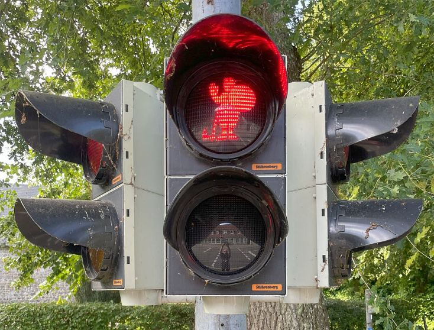
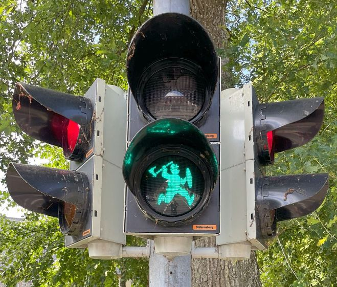
Die konnte ich bei meinem Besuch am 11.07.2025 vor Ort aktivieren und anschauen. In der Innenstadt von Schleswig, am "Capitolplatz", habe ich dann noch eine solche Ampel entdeckt. Die ist laut Meldung der sh:z vom 18.06.2025 dort im Einsatz, und wurde bewusst an der sicherlich meistfrequentierten Kreuzung Stadtweg/Bismarckstraße installiert.
05.08.2025
Gerade habe ich in Youtube den Film "Timeline Deutschland - Spektakuläre Entdeckung: Wikingerschiffe in Dänemark!" (44:24 Minuten) entdeckt. Nach dem dortigen Eintrag wurde er erst am 28.03.2025 veröffentlicht. Der Film wurde aber bereits unter dem Titel "Die Wikinger - Fakten und Legenden - Das Rätsel von Roskilde" im Jahr 2020 über ZDFinfo veröffentlicht. Darauf hatte ich am 25.10.2020 hier hingewiesen. Diese Reihe kann man sich aber immer wieder anschauen, da sie höchst interessant ist.
05.08.2025
Heute Abend habe ich mein Tagebuch von 1995 durchgeblättert und fand unter Mittwoch, 14. Juni 1995, den Eintrag: "Jo computert. Auf den Spuren der Wikinger in Dänemark begonnen". Das ist dann doch schon ein Weilchen her - über 30 Jahre - und war mir auch nicht mehr so geläufig! Wochen zuvor hatte ich mir meinen ersten Computer, den mir ein Kollege zusammengeschraubt hatte, für 1500 DM gebraucht gekauft. Da war noch MS Windows 3.11, aber auch schon MS WORD drauf! Damals - es gab ja noch keine Webseiten, kein Internet wie wir es heute kennen - war es meine Absicht eine Art Buch, weg von der Schreibmaschine, zu Papier zu bringen. In Wikipedia findet sich dieser Eintrag: "...Mit dem sogenannten Web 2.0 wurden ab etwa den 2000er Jahren Webseiten populär, deren Inhalt der Nutzer nicht nur wie etwa bei Nachrichten-Seiten passiv ansehen, sondern selbst ändern und ergänzen kann, z. B. um eigene Inhalte zu veröffentlichen oder mit anderen Nutzern zu kommunizieren..." Erst danach habe ich dann über "Learning by doing" so langsam angefangen eine eigene Webseite zu erstellen. Am 14.04.2000 habe ich meine Homepage erstmals ins Netz gestellt, wie ich meinem 2000er Tagebuch entnehmen konnte.
04.08.2025
Die Tage habe ich Ergänzungen / Verbesserungen an einigen Örtlichkeiten innerhalb von Jütland vorgenommen.
Bork Wikingermarkt von Freitag, 08. bis Sonntag, 10. August 2025 in Bork Havn - jeweils von 10.00 bis 17.00 Uhr - Eintritt: Erwachsene 165 kr. / Kinder 3-17 Jahre: 50 DKK / Kinder 0-2 Jahre: frei - ein Erlebnis für Jung und Alt.
Buchtipp: Arnulf Krause - Runen. Geschichte Gebrauch Bedeutung. Marix Verlag, Wiesbaden, 2. Aufl. 2020, 224 S., gebunden mit Schutzumschlag, 12,5 x 20 cm, 10,00 - Das Büchlein habe ich mir in Schleswig gekauft und die Tage gelesen - leicht und verständlich wird hier umfangreiches Wissen vermittelt und das auch noch zu einem unschlagbaren Preis!
28.07.2025
Unter dem Datum vom 02.07.2025 hatte ich bereits auf diesen Buchtitel hingewiesen, der mir per Zufall unterkam: "Flusskönige - Die Wikinger auf der Seidenstraße - Eine Reise von Skandinavien bis nach Indien". Das Buch von Cat Jarman (Bio- und Feldarchäologin am Institut für Anthropologie und Archäologie der Universität Bristol) war 2021 mit dem Originaltitel "Riverkings. A New History of the Vikings from Scandinavia to the Silk Roads" erschienen, wurde glücklicherweise ins Deutsche übersetzt und am 31.10.2024 veröffentlicht - Propyläen Verlag - Hardcover - 432 Seiten - 30 Abbildungen und Karten - Maße: 21,8/14,4/3,8 cm - günstige 28.- . Nachdem ich mir das Buch zeitnah besorgt hatte, brauchte ich auch nicht lange um es auszulesen. Das war wirklich ein Hochgenuss! Das Beste was ich zu den Wikingern in letzter Zeit zu lesen bekam. Nie langweilig, auch für Laien leicht verständlich, fundierte Informationen zu den aktuellen forensischen Techniken, mit überraschend vielen Neuigkeiten auch für mich. Dieses Buch ist ein ABSOLUTES MUSS für jeden Freund der WIKINGER!
Mir scheint aber, dass die vorangestellte Widmung "Für Til Mormor" von der Übersetzerin falsch gedeutet wurde. Das bedeutet doch sicherlich aus dem norwegischen "Für Großmutter".
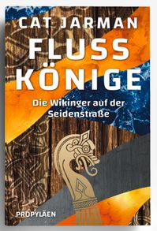
Auf der Buchrückseite heißt es:
»Eines der spannendsten Werke archäologischer Detektivarbeit, die man je gelesen hat.« FINANCIAL TIMES
Als Cat Jarman ihre Arbeit in der Wikingerstätte Repton (Südengland) aufnimmt, stößt sie auf eine kleine Karneolperle. Fast hätte man den orangefarbenen Stein für Modeschmuck aus dem 20. Jahrhundert halten können. Doch was hat es mit dem Artefakt wirklich auf sich, welche Geschichte versteckt sich hinter seiner polierten Oberfläche? Ausgestattet mit wissenschaftlicher Neugier und modernsten Forschungsmethoden, verfolgt Jarman den Weg des Karneols zurück bis nach Bagdad und Indien. Auf den Spuren der wilden Reisenden des Nordens entwirft sie ein neues Bild von der globalen Welt des Mittelalters. Ausgezeichnet als »A Times Book of the Year 2021«
Im Zuge der Nachbereitung meiner Wikinger Tour 2025 in Schleswig habe ich zwei alte Abhandlungen aus meiner Bibliothek zu den dortigen Runensteinen eingescannt und jeweils eine pdf-Datei erstellt. Diese Aufsätze sind inzwischen gemeinfrei - Lizenz: Public Domain. Ich habe beide bislang auch noch nicht als Digitalisate im Internet aufstöbern können. Vielleicht freut sich jemand darüber :-)
Neue Mittheilungen von den Runensteinen bei Schleswig - Handelmann & Splieth - Kiel 1889.pdf - Gottfried Heinrich Handelmann (*09. August 1827 - 26. April 1891, Geschichtsforscher) / Wilhelm Andreas Hermann Splieth (*10. Oktober 1862 - 10. Februar 1901, Prähistoriker)
Der Runenstein im Schleswiger Dom erläutert von R. v. Liliencron und Ludv. Wimmer - Kiel 1898 - Rochus Wilhelm Traugott Heinrich Ferdinand Freiherr von Liliencron (*08.12.1820 - 05.03.1912, Germanist) / Ludv. F. A. Wimmer (*07.02.1839 - 29.04.1920, Philologe)
Außerdem habe ich die Unterseite zum Skarthistein - innerhalb der Rubrik "Haithabu / Infos zum Wikinger Museum Haithabu / B - Skarthistein" - überarbeitet und aktuelle Fotos eingestellt.
Die Tage bekam ich von Felix Rickert aus Kiel eine E-Mail, der mir darin berichtete, dass er am 24.07.2025 beim Maskenstein von Sjellebro vor Ort war. Der Stein sei aktuell "freigeschnitten" und auch sehr gut erreichbar. Einige Fotos stellte er mir auf Anfrage großzügig zur Verfügung, die ich gestern eingearbeitet habe. Vielen lieben Dank! :-) Er hat auf "The Megalithic Portal" eine eigene Seite zu diesem Maskenstein eingestellt.

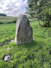
27.07.2025
Haithabu Museum - Besuch am 11. und 12. Juli 2025

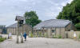

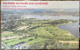

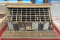

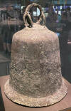

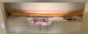

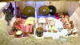

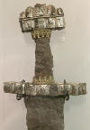

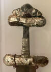

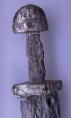

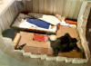

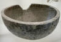

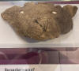


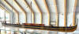

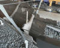

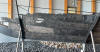

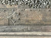

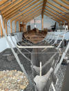

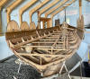

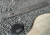
Literaturtipp zum Bootkammergrab von Haithabu - Egon Wamers - Ein dänischer Vasall im Bootkammergrab von Haithabu fränkisches Hofzeremoniell im Norden (Auszug aus: Die Macht des Silbers Karolingische Schätze im Norden - 2005 - S. 165-173)
Sommermarkt in Haithabu 2025 - 11. bis 13. Juli 2025
Erstmals gab es ein 2-Tage-Ticket für das Museum, die Haithabu Häuser (Flyer) und den Sommermarkt zum Preis von 17,00 , das ich in Anspruch genommen habe. Man konnte erfreulicherweise so oft man wollte Kommen und Gehen, egal ob im Museum oder im Freigelände. Hier einige Impressionen von meinem Besuch.

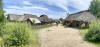

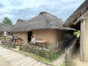

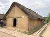

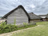

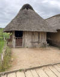

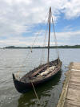

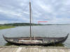


Auf dem Heimweg dann noch an der "Ansgar Memoria" (Einweihung 10/2011) und - ich glaube überhaupt erstmals - in der St. Andreas-Kirche in Haddeby vorbeigeschaut und damit ist meine Berichterstattung zu meinem 2025er Schleswig Wikinger Tripp abgeschlossen.


Von der Installation "Thorshammer" im Kreisverkehr Busdorf, die es offenbar schon seit 2004 gibt, habe ich leider erst zu Hause gelesen, sonst wäre ich da auch mal vorbei. Über 20 Jahre lang nix davon mitbekommen - unfassbar! :-(
Google Street View - abgerufen 27.07.2025
26.07.2025
In Schleswig kann man auch - mal weg von den Wikingern - das originale Nydam-Schiff und einige Moorleichen im Schloss Gottorf besichtigen, was ich nach Jahren am 10.07.2025 auch mal wieder gemacht habe.
Das Nydam-Schiff ist ein Ruderboot, das um 340 n. Chr. im Nydam-Moor (Sønderjylland) geopfert und im Jahre 1863 entdeckt und ausgegraben wurde. Es war ein hochseetaugliches Kriegsfahrzeug, das als schneller Truppentransporter bis zu 45 Mann aufnehmen konnte. Es hat eine Länge von 22,84 m und einer maximalen Breite von 3,26 m. Die sich überlappenden Planken waren mit eisernen Nieten untereinander verbunden.


Zu den Moorleichen möchte ich zunächst auf die digitalisierte Abhandlung "Handelmann, Heinrich und Pansch, Adolf: Moorleichenfunde in Schleswig-Holstein, 1873" hinweisen. Darin findet sich diese historische Fotografie des "Mann von Rendswühren". Er war am 01. Juni 1871 beim Torfstechen gefunden worden.
Lizenz: Public Domain

Heute liegt diese Moorleiche im Schloss Gottorf. Eine sehr interessante Webseite zu der Moorleiche findet sich hier.

Früher als das "Mädchen von Windeby" tituliert, wurde diese Moorleiche am 19.05.1952 beim Torfstechen gefunden. Allerdings geht die Forschung heute davon aus, dass es ein 15-16 jähriger Junge aus dem 1. Jahrhundert war. Der Todeszeitpunkt liegt in den Jahren zwischen 41 vor und 118 nach Christus.


Moorleiche von Windeby: Von der Ehebrecherin zum "Windeboy"
Dann findet sich noch die im Jahr 1900 gefundene Moorleiche "Mann von Damendorf" im Museum.

Der Schädel des Mannes von Osterby wurde am 26.05.1948 beim Torstechen gefunden. Der Schädel mit seinem außergewöhnlich gut erhaltenen rötlichen Haar und dem gebundenen "Suebenknoten", einer typisch germanischen Männerfrisur, ist weithin berühmt. Schon Tacitus schrieb in seiner Germania, dass gerade die Vornehmen unter den Sueben die kunstvollsten Knoten trugen. Der Mann wurde sicherlich enthauptet und sein Schädel in Fellstücke eingewickelt im Moor niedergelegt. Es fanden sich trotz intensiver Suche in der Umgebung keinerlei weitere Skelettteile. Sein Todeszeitpunkt wird in die Zeit zwischen 75 und 130 n. Chr. datiert.
Bei der Gelegenheit bringe ich hier mal auch Fotos der dänischen Moorleiche "Tollundmann", von mir aufgenommen am 11.06.2022, der im Museum (umfassende Informationen in englischer Sprache) in Silkeborg ausgestellt ist. Diese männliche Moorleiche, deren Erhaltungszustanmd extrem gut ist und dessen Bartstoppel noch eindeutig zu sehen sind, wurde am 08.05.1950 gefunden. Neuere Radiokarbondatierungen ergaben einen wahrscheinlichen Todeszeitraum - durch Hängen - von 405380 v. Chr., der damit in die vorrömische Eisenzeit fällt.


21.07.2025
Neubau Danewerk Museum / Wieglestor / Waldemarsmauer / Hauptwall bei Kurburg
Natürlich habe ich auch die Baustelle des Museumneubaus in Dannewerk besucht. Bis zum Herbst 2026 soll das neue Gebäude mit insgesamt ca. 1.600 Quadratmetern Nutzfläche entstehen. Anschließend wird die neue permanente Ausstellung zum Danewerk eingerichtet, die mit Experten ganz neu entwickelt wird. Sie wird mit ca. 800 Quadratmetern mehr als doppelt so groß wie die im alten Museumsgebäude sein. Hinzu kommt erstmals eine Sonderausstellungsfläche. Das neue Vermittlungszentrum eröffnet erwartungsgemäß im Frühjahr 2027.


Das benachbarte Wieglestor siehte heutzutage so aus.


Der sichtbare Abschnitt der Waldemarsmauer auf ca. 70 m Länge bereitet weiterhin Probleme, da die Feuchtigkeitsschäden offenbar nicht in den Griff zu bekommen sind.


Der Hauptwall bei Kurburg und der Kograben am Fliegerhorst Schleswig-Jagel sehen aus wie immer.


21.07.2025
Runensteine (-kopien an ihren Fundorten im Umfeld) von Haithabu.
Großer Sigtrygg Runenstein - Kopie - Höhe über der Erde: 214 cm / Breite Seite A: 46 cm / Breite Seite B: 66 cm / Runenhöhe: 13/21/25 cm
DK-Runer Eintrag / Inschrift: Asfrid machte dieses Denkmal nach (zum Gedenken an) Sigtrygg, ihren und Knubas Sohn / Transliteration: Seite A ąsfriþr : karþi : kum|bl : þaun | ąft : siktriku : Seite B sun (:) (s)in : ąui : knubu


Kleiner Sigtrygg Runenstein - Original - Gesamthöhe: 124 cm / Breite: 43 cm / Dicke: 36 cm / Runenhöhe: 7 - 11 cm
DK-Runer Eintrag / Inschrift: Asfrid, die Tochter Odinkars, machte diese Denkmäler nach (zum Gedenken an) König Sigtrygg, ihren und Knubas Sohn. Gorm ritzte die Runen
Transliteration: Seite A : ąsfriþr : karþi | kubl : þausi : tutiR : uþinka|u|rs : ąft : siktriuk : kunuk : Seite B : sun : sin : | : auk : knubu : Seite C kurmR (:) raist (:) run(a)(R) (:)

Erikstein - Kopie - Höhe über der Erde: 210 cm / Breite - Seite A: 83 cm / Seite B: 77 cm / Größte Dicke ca.: 80 cm / Runenhöhe: 17,5 - 21 cm
DK-Runer Eintrag / Inschrift: Thorulf, der Gefolgsmann Svens, errichtete diesen Stein für seinen Genossen Erik, der den Tod fand, als Krieger Hedeby (Haithabu) belagerten, und er war Steuermann, ein wohlgeborener Krieger
Transliteration: Seite A : þurlf : risþi : stin : þąnsi : | : himþigi : suins : eftiR : | erik : filaga : sin : ias : uarþ Seite B : tauþr : þą : trekiaR | satu : um : haiþa:bu | : i=a=n : h=a=n : u=a=s : s=t=u=r=i:m=a=t=r : t=r=e=g=R : | : harþa : kuþr :


Skarthistein - Kopie - Höhe über der Erde: 158 cm / Größte Breite: 114 cm / Größte Dicke: 38 cm / Runenhöhe: 14,3 - 22,5 cm
DK-Runer Eintrag / Inschrift: König Sven setzte diesen Stein für Skarthi, seinen Gefolgsmann, der nach Westen gefahren war, aber nun den Tod fand bei Haithabu
Transliteration: Seite A : suin : kunukR : sati : | stin : uftiR : skarþa | sin : himþiga : ias : uas : | : farin : uestr : iąn : nu : Seite B : uarþ : tauþr : at : hiþa:bu